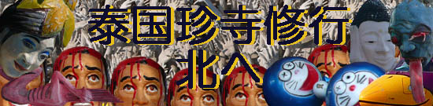
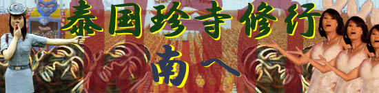

再びのタイである。
当サイトの熱心な読者であればもう、すっかり御馴染み。タイといえばコンクリ立体地獄。
これまでにも数々のタイの珍妙な寺を紹介してきた。
|  |
2008年 | |
| 2006年 | ||
| 2004年 | ||
| 2000年 |
今回はタイ修行10年間の総仕上げ。
題して

前半はバンコク近郊、後半はプーケット周辺の超観光地コンビ。
まるでタイに初めていった観光客みたいな組み合わせだが、行き先はいたってディープ。
初心者ではまず近寄れないド田舎、しかも地元のタイ人にまで「何で行くの？」って聞かれるようなトコばかり。
修行です。修行。
ここ数年間でタイ地獄界において大きな出来事がいくつかあったのでお知らせしておく。
本邦の珍スポ番長である都築響一大兄によってタイの地獄の写真集が刊行されたのだ。

また素晴らしいブログにも出会った。
泰国の変なスポット
タイ在住ならではの細かいリサーチと大胆な行動力によって生み出された恐らく世界一詳しいタイの地獄レポート。
今回、このブログを参考させていただき、ついでにブログを運営するマーレンポーさんともタイでお会いすることが出来た。
その他、ネットの世界を中心にタイの地獄愛好家が続々と増えている。実に喜ばしいことである。
タイの人達にしてみればガキンチョすら見向きもしない激ダサ施設だが、これほどまでに（一部の）日本人のハートをわし掴みにする理由は一体何なのだろう？今回のテーマをその辺に設定しつつ、もちろん面白そうなところは目に付いた順からつまみ食いし放題の旅。
それでは深遠なるタイ珍寺の世界へいってらっしゃい〜。
Bangkok
ドレスのなる木 Tree that dress hangs of doing
Supanburi
ワットパイロンウア/Wat Phai Rong Wua
ナレースワン王像/Monument Of Naresuan
ラックムアンと巨大龍/Citypillar and Huge Dragon
ワットプラロイ/Wat Phra Loi
Ayutthaya
ワットバンノムコー/Wat Bang Nom Kho
ワットガイその1/Wat Kai
ワットガイその2/Wat Kai
PathumThani
NakhonPathom
ワットサンプラン/Wat Samphran
Phuket
プーケット大仏/The Big Buddha
ワットシースントン/Wat Si Sun Thon
ワットプラトン/Wat Phra Tｈong
PhangNga
ワットスワンクア/Ｗａｔ Suwan Kuha
ワットタパンその1/Wat Ta Pan
ワットタパンその2/Wat Ta Pan
こんな場でこんな話題もアレですが2010年5月のバンコク騒乱で亡くなった方々に哀悼の意を表します。
2009.12.〜2010.01.